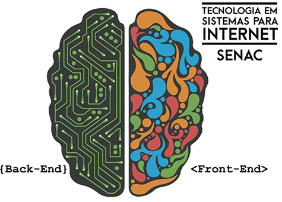

1º semestre é responsável pela criação do site institucional da empresa, contendo descrições do que seria cada projeto fictício.

Sistemas para InternetUm sistema de internet vai muito além de Web Design.
Projeto IntegradoO projeto visa integrar todo o conteúdo ministrado em todas as disciplinas do curso a fim de aplicar em modo prático e testar o que foi absorvido pelos alunos. A cada semestre, três empresas fictícias são criadas, e os grupos de alunos são encarregados de desenvolver estruturas para web que compõem o conjunto de sistemas de cada empresa. O projeto se aplica de forma contínua, trazendo a cada semestre um novo desafio criando um sistema maior e mais completo.
Sistemas para InternetUm sistema de internet vai muito além de Web Design.
Este curso apresenta conjunto de disciplinas distribuídas de acordo com as necessidades do mercado, balanceadas para habilitar um desenvolvedor completo. Juntando o Front-end ao Back-end com conceitos de gestão, contando com a qualidade Senac. saiba mais
Projeto IntegradoO projeto visa integrar todo o conteúdo ministrado em todas as disciplinas do curso a fim de aplicar em modo prático e testar o que foi absorvido pelos alunos. A cada semestre, três empresas fictícias são criadas, e os grupos de alunos são encarregados de desenvolver estruturas para web que compõem o conjunto de sistemas de cada empresa. O projeto se aplica de forma contínua, trazendo a cada semestre um novo desafio criando um sistema maior e mais completo.
Trazendo a ambientação do mercado de trabalho e as suas exigências para o meio acadêmico.
- 1º Semestre
- 2º Semestre
- 3º Semestre
-
4º Semestre
4º semestre é responsável pelo desenvolvimento de um app mobile que permita a venda dos produtos pelo celular.
- 5º Semestre